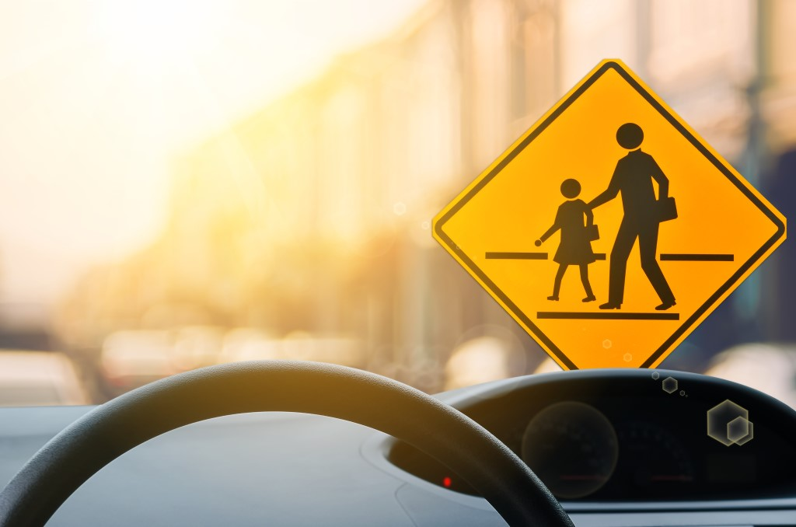

| Indice degli argomenti | L'educazione stradale |
|---|---|
4. Educazione alla Convivenza e Rispetto ReciprocoLa strada è un ambiente condiviso da diverse persone, tra cui automobilisti, motociclisti, ciclisti, pedoni e mezzi pubblici. Per garantire una circolazione sicura ed efficiente, è fondamentale promuovere il rispetto reciproco e una convivenza armoniosa. L’educazione stradale non si limita al rispetto delle regole, ma favorisce anche la consapevolezza delle esigenze e dei diritti di tutti, contribuendo a una mobilità più sicura e responsabile. - Comunicazione e Cortesia alla Guida:Una convivenza armoniosa sulla strada dipende anche da una comunicazione chiara tra gli utenti. Segnali, gesti di cortesia e rispetto reciproco possono contribuire a prevenire incidenti e rendere la circolazione più sicura per tutti.Per comunicare meglio, potremmo: - Usare gli indicatori di direzione per segnalare le manovre in anticipo. - Mantenere un comportamento calmo, evitando reazioni aggressive o gesti di impazienza. - Dare la precedenza quando necessario, anche se si ha il diritto di passare, per evitare situazioni pericolose. - L’Importanza dell’Educazione Stradale Fin da Giovani:Educare al rispetto e alla convivenza stradale fin dall’infanzia è fondamentale per formare futuri utenti responsabili. Scuole e famiglie svolgono un ruolo centrale nell’insegnare ai bambini le regole di sicurezza e nell’incoraggiare comportamenti corretti sulla strada. |